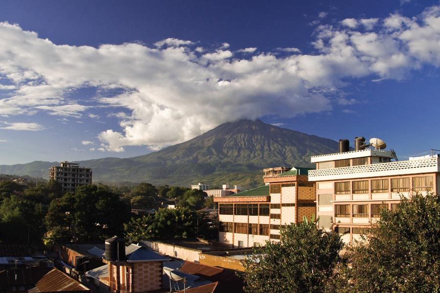
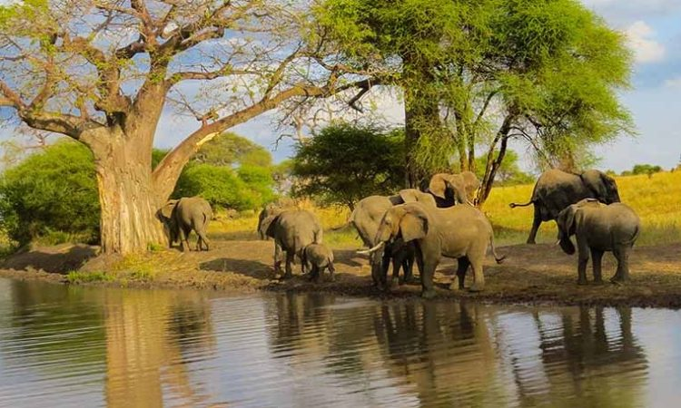
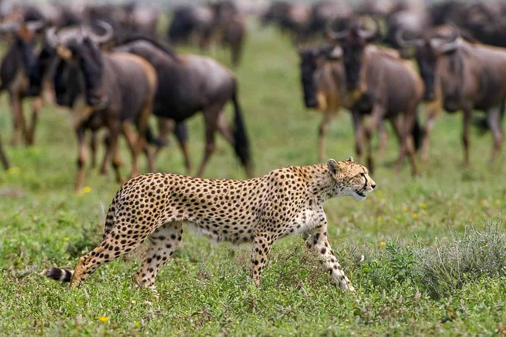
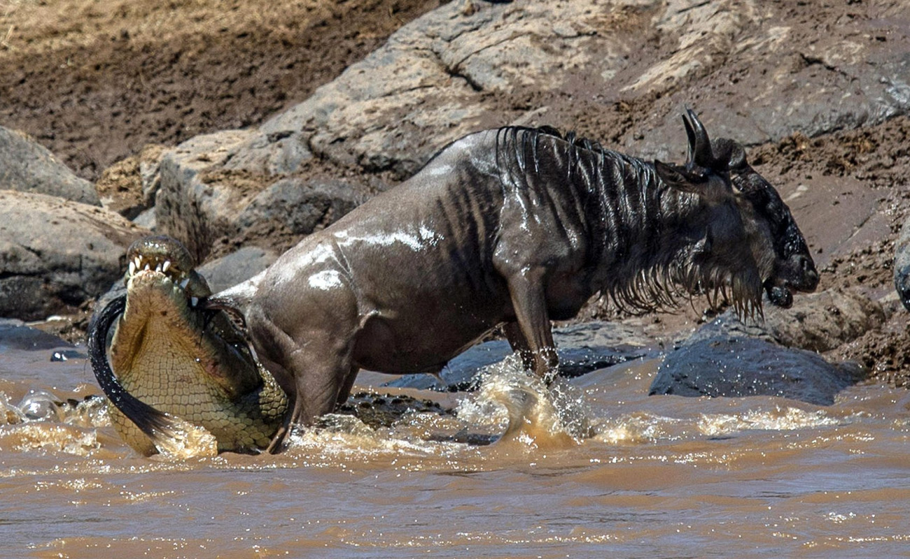
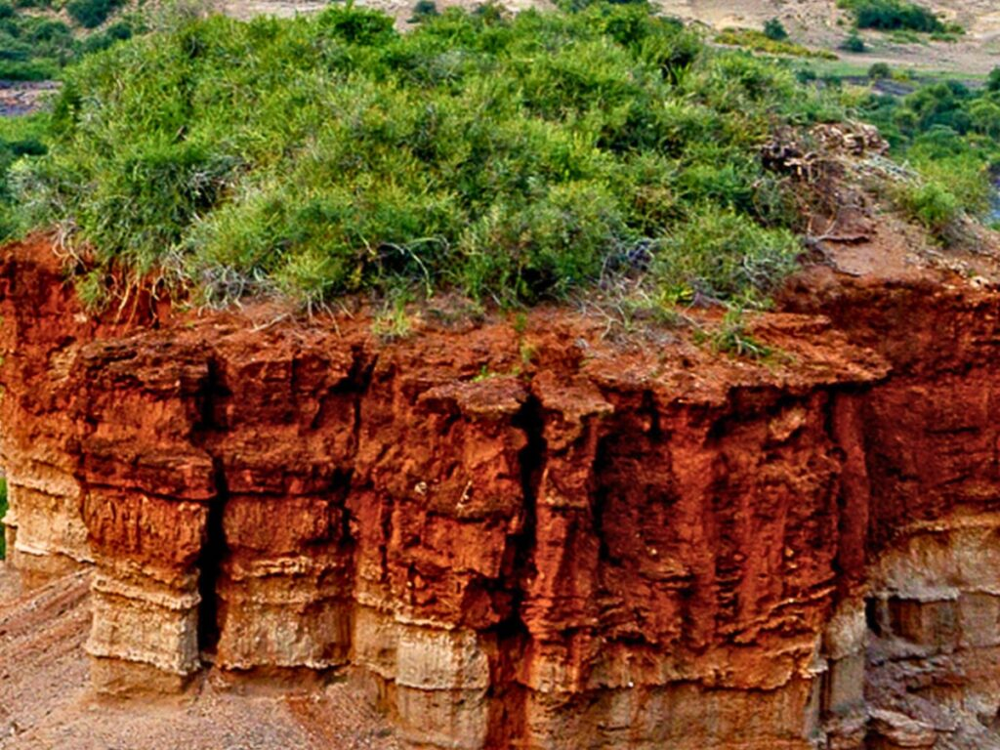

Day 1: Arrival in Arusha
Accommodation: Tulia LodgeUpon arrival in Arusha, our representative guide will warmly welcome you and escort you to Tulia Lodge, a charming and peaceful hotel perfectly located for a relaxing start to your safari. Settle into your room, refresh, and enjoy the tranquil atmosphere as you unwind from your journey. In the evening, you may choose to explore the vibrant Arusha surroundings or simply relax at the hotel as you prepare for the adventure ahead.

Day 2: Serval Wildlife Experience
Eco-Tourism SanctuaryServal Wildlife is a unique eco-tourism sanctuary nestled between the slopes of Mount Meru and Mount Kilimanjaro, offering visitors an extraordinary chance to connect with Tanzania’s wildlife in a natural and scenic environment. The sanctuary is home to a variety of animals, including lions, giraffes, zebras, elands, monkeys, and ostriches. Enjoy a rare opportunity to get up close with some of Africa’s most iconic animals. You can feed selected animals, interact with them, take memorable photographs, and observe wildlife from an exceptionally close distance, creating an unforgettable experience while learning about wildlife conservation and protection efforts.

Day 3: Tarangire National Park
Accommodation: Eileen's Trees LodgeStart your journey with an early pick-up from Arusha and head to Tarangire National Park. Home of the giants—large elephant herds, baobab trees, and stunning wildlife along the Tarangire River. Enjoy a full-day game drive as your guide explores the best wildlife spots.

Day 4: Central Serengeti
Accommodation: Mbuni Tented CampBegin your day with an early drive through the Ngorongoro highlands as you head into the legendary Serengeti National Park. You will see big cats (lions, cheetah, leopard), large herds of wildebeest and zebra, and endless golden plains. Enjoy game drive viewing en-route and an afternoon game drive in Central Serengeti famous for its year-round wildlife.

Day 5: Central Serengeti
Accommodation: Mbuni Tented CampEnjoy a sunrise game drive in Serengeti when predators are most active. This is home of the world-famous Great Migration where over 2 million wildebeest, zebras, and gazelles move across the golden plains in a dramatic circle of life. Africa’s most iconic safari destination, land of big cats, endless savannah experiences, a photographer’s paradise where nature comes alive, and a year-round world destination. After lunch, drive toward Ngorongoro as wildlife accompanies your journey. Arrive in the evening at Ngorongoro safari lodge.

Day 6: Ngorongoro Crater
End of SafariAfter breakfast, enjoy one of the most breathtaking panoramas in Africa. From the rim, you get a clear, wide view of the world’s largest unbroken caldera—stretching over 260 square kilometers of wildlife-rich plains, featuring stunning sunrise and sunset scenery. This gives you a perfect bird’s-eye view of the entire crater floor and an excellent chance to spot animals from above. This is an incredible photo opportunity inside a cool, refreshing highland climate.
"Thanks for choosing our company"